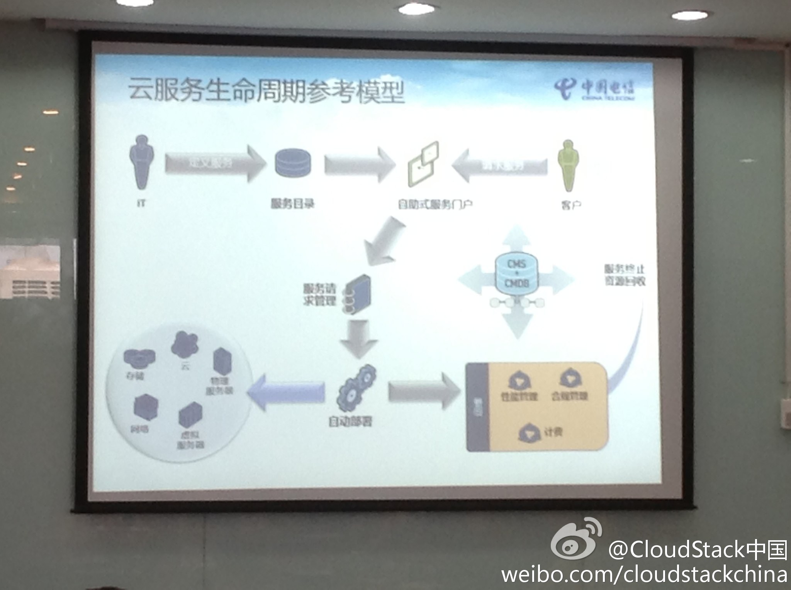
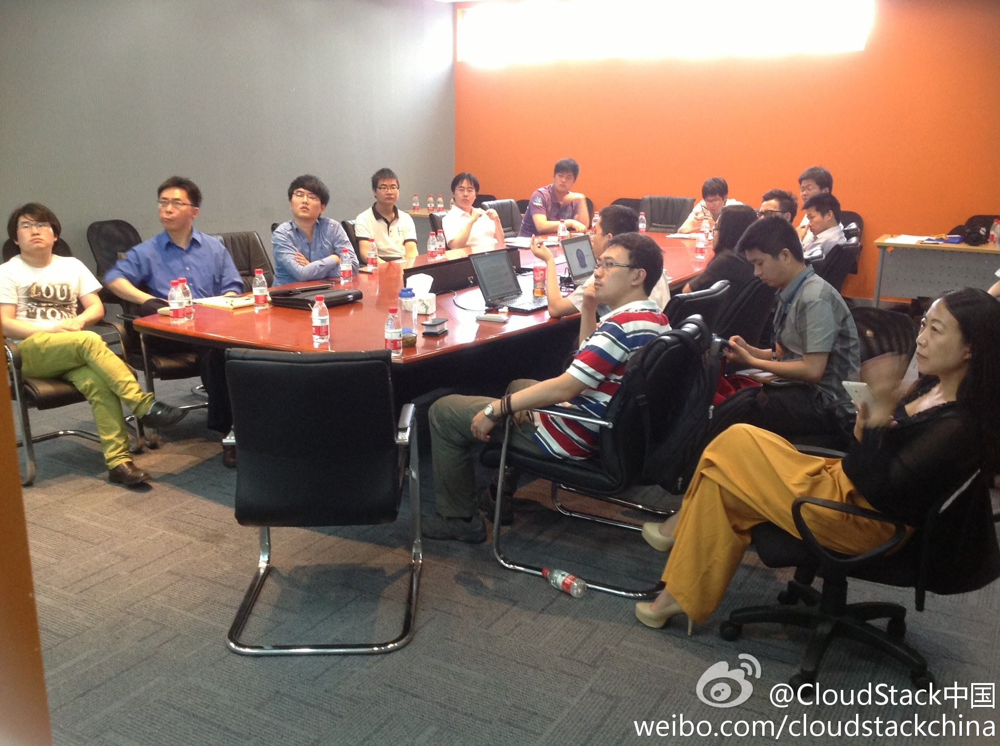

Ada李力
2013-06-21


Ada李力
2013-06-21
昨天收获两枚毛绒玩偶。谁知道这俩都是哪家公司和社区的LOGO?
Ada李力
2013-06-21

Ada李力
2013-06-21
@CloudStack中国:
#CloudStack技术沙龙#魏伟的分享上升了一个高度，我们来讨论企业IT服务所面临的问题！ 。。。。。。欢迎姗姗来迟的 @Ada李力
。。。。。。欢迎姗姗来迟的 @Ada李力  @CSDN云计算 还有 很遗憾学辉@lee-xh 不能来现场，多分享些现场照片给你吧！
@CSDN云计算 还有 很遗憾学辉@lee-xh 不能来现场，多分享些现场照片给你吧！ 我在:#浦东张江高科软件园#
我在:#浦东张江高科软件园#
- 

- 